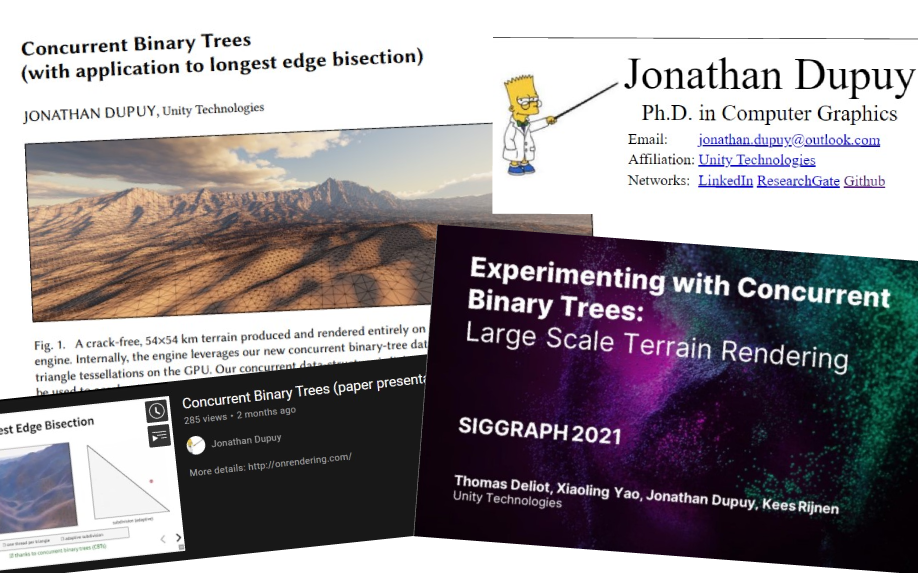
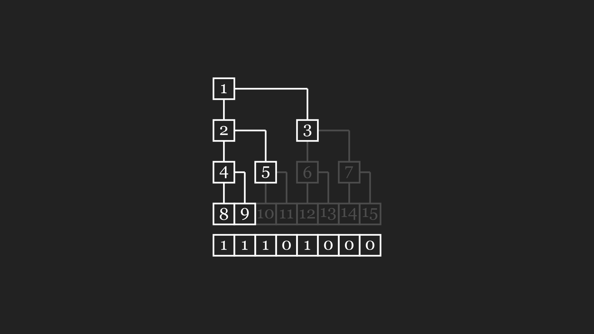
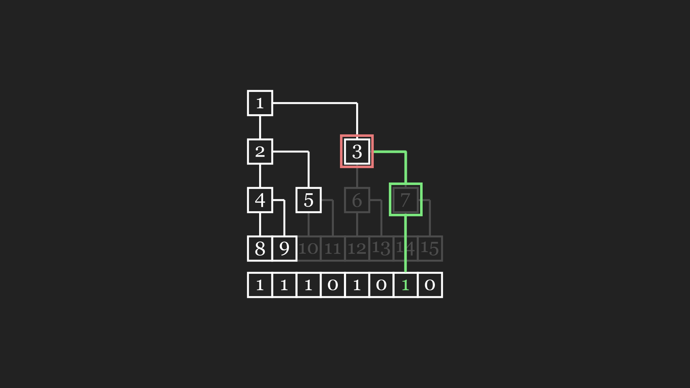
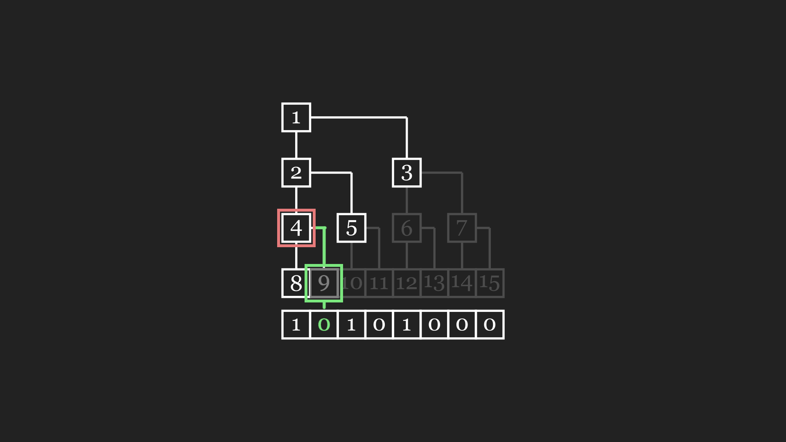
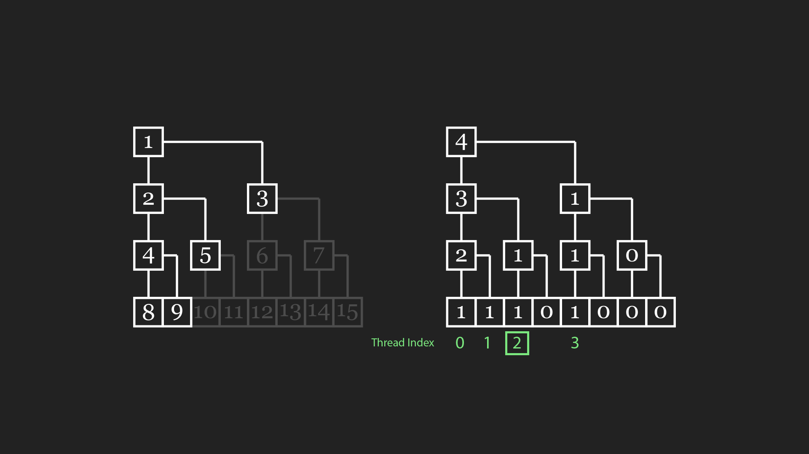
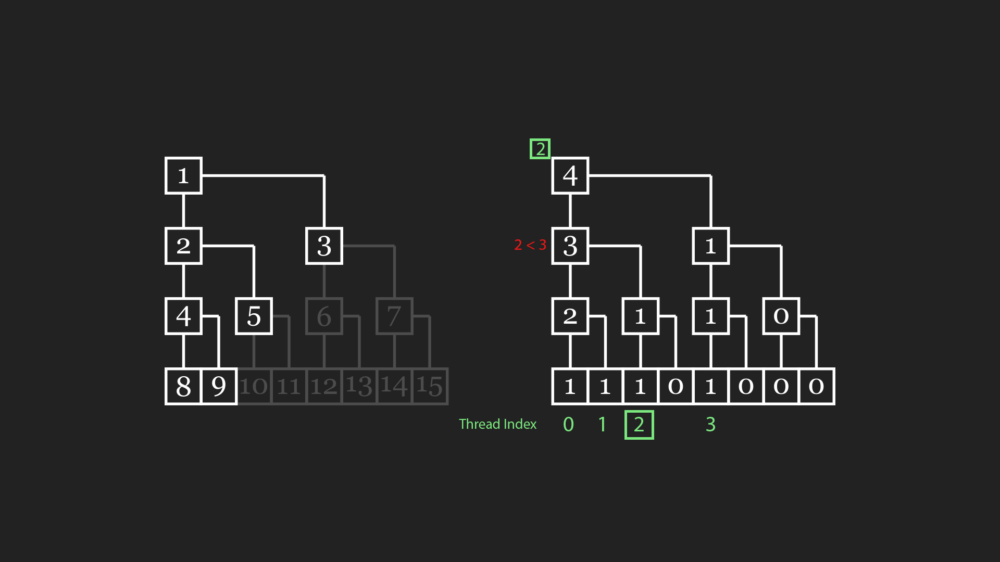
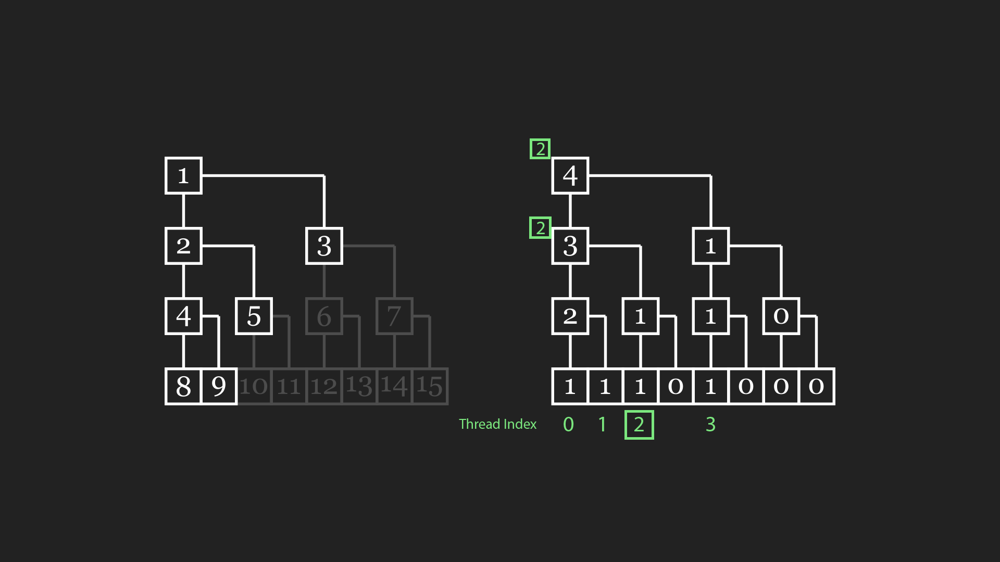
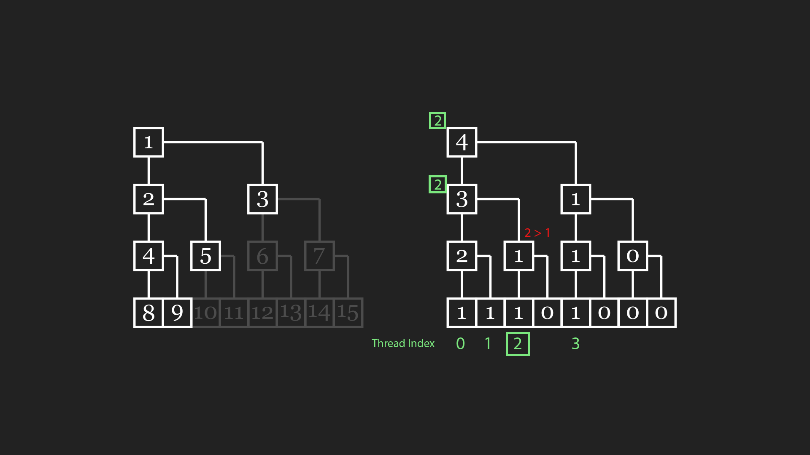
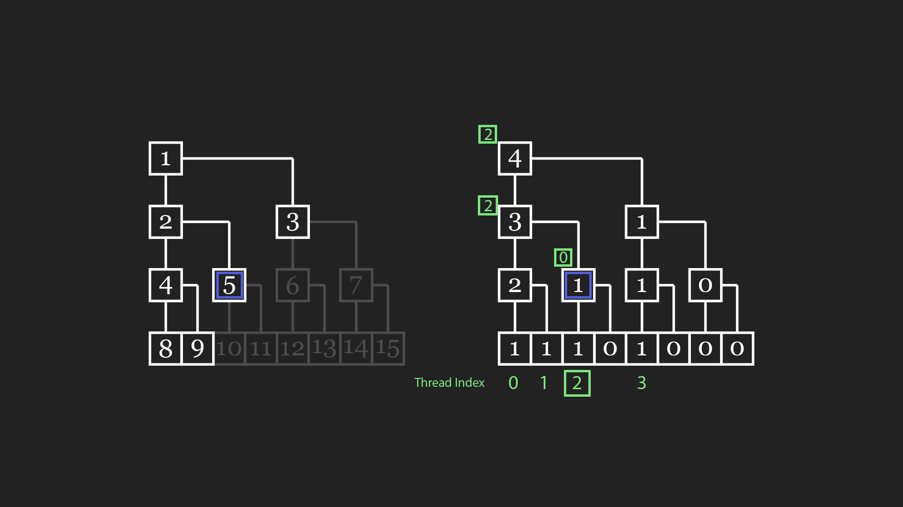

Adaptive Subdivion on the GPU
Concurrent Binary Tree & Longest Edge Bisection
Manim
video source
Skip to the results
Loads of material!

Adaptive Subdivision
Tessellation shaders, Geometry shaders?
Subdivision = Recursive Algorithm = Exponential Cost
- Adaptive: Subdivide where necessary
- Parallel: Multithreaded, on GPU
Subdivision as Binary Trees
Leaf nodes describe triangles via the path they form from the root
Longest Edge Bisection (LEB)
Uniform Subdivision
Binary
LEB Split Matrix
Example
Another!
Adaptive Subdivision
Binary Tree
“Concurrent” Binary Tree
Encoding a binary tree with a bitfield
Splitting and merging
Split node 3 and merge node 4.

Split
Set right child bit to 1

Merge
Set right child bit to 0

Sum Reduction Tree
Map ThreadID -> Triangle





High level Subdivision code
for(triangleIndex : triangles)
nodeIndex = cbt.BinarySearch(triangleIndex);
lod = ComputeLOD(GetTriangle(nodeIndex));
if(lod > 1.0f)
cbt.Split(nodeIndex);
else
mergeTop = ComputeLOD(GetTriangle(TopTriangle)).x < 1.0f;
mergeBase = ComputeLOD(GetTriangle(BottomTriangle)).x < 1.0f;
if(mergeTop && mergeBase)
cbt.Merge(nodeIndex);
CBT + LEB Update loop
Mesh Shader loop
Subdivision + Rendering in a single shader!
Per triangle frustum culling and expansion.
LOD Criteria
- Screen size
- Frustum culling
- Local displacement
- Retain silhouette for shadows
Storage
Define max subdivision before hand.
\[\begin{aligned}
VRAM = 2^{D+2}\, bits
\end{aligned} \]
Grows exponentially
| Depth |
Size |
Leaf nodes (Triangles) |
| 24 |
8.0 MB |
8 388 608 |
| 25 |
16.0 MB |
16 777 216 |
| 26 |
32.0 MB |
33 554 432 |
| … |
… |
… |
Packing Data
We know exactly how many bits each node needs!
| Depth |
Bits/Node |
| D |
1 bit |
| D - 1 |
2 bits |
| D - 2 |
3 bits |
| D - 3 |
4 bits |
| … |
… |
What’s next?
- Unity’s future terrain rendering algorithm.
- Suitable for water rendering?
- More subdivision?
- UE5’s Nanite